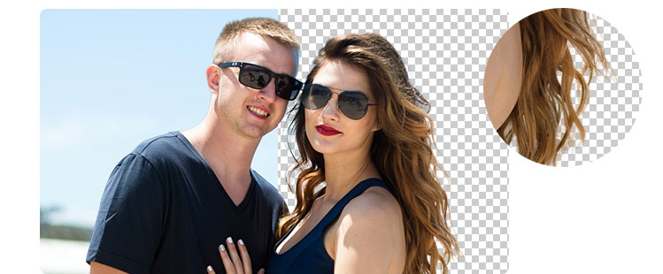

强大&高效&免费
强大
令人惊叹的边缘细节，发丝抠图等可用于商业用途

高效
批量处理& AI抠图& -键抠图& API集成，为您的生活节省时间
常见问题
Q什么是抠图/去背景?
把图片中的主体（前景）从背景分离，目的是为了可以去掉背景，或者更换背景，或者对背景和主体分别使用不同的图片特效和滤镜效果，或者在主体和背景中间插入其他的人物、产品、文字等等元素。举个例子，科幻电影的拍摄，比如复仇者联盟系列，大量运用绿幕来进行拍摄，目的就是为了可以通过去除绿色就可以方便地进行背景和特效叠加。而对于普通人，这样无疑是需要花费大量的时间和精力。人工智能的发展，给大家带来了前所未有的抠图体验。
Q抠图/去背景有哪些应用场景？
抠图/去背景，是照片处理、UI设计、视觉设计中都有大量的应用。比如：电商的宝贝主图详情页、促销海报banner、直通车图片；新媒体的微信公共号文章首图、配图，小程序封面等；企业办公的产品推广海报、销售战报、员工工牌、生日节日问候等；线下外卖、教育、美容、健身、便利店、民宿、汽修的展架、易拉宝、优惠券、开业活动；个人证件照制作，证件照换背景颜色，求职简历，Vlog，相册制作等；娱乐的图片背景效果，搞笑明星合影，鬼畜素材，换景点等。
Q人工智能抠图/去背景的原理是什么？
PicUP.AI 使用最先进的人工智能深度学习技术—深度卷积神经网络(Deep Convolutional Neural
Networks)，采取多阶段高通量自动编解码基础架构进行图像语义分割，并且增加了预测出图像的前景物体的透明通道(Alpha
Matting)。图像语义分割就是机器自动从图像中分割出对象区域，并识别其中的内容。在处理图像时，具体到像素级别，也就是说，该方法会将图像中每个像素分配到某个对象类别。这样人工智能就把主体和背景识别出来，从而可以做到把二者分离。
Q人工智能抠图用起来简单吗？
一键，真正的一键抠图，一键上传图片后，你就可以得到最终的抠图结果。其他网站的在线抠图工具，都基本都需要自己去划定主体和背景，耗费大量的时间，并且精度无法保证。在PicUP.AI，一键搞定，超级简单。不需要任何专业知识，不会PS，不懂图像技术的小白都能用。
Q支持批量抠图吗？
登录后，就可以批量上传。帮你节省更多时间。别忘了，在缩略图下方，还有批量打包下载的按钮哦。
Q在线人像抠图有API吗?
有的! API入口在此。API调用支持主流编程语言，包括命令行、python、php、Java。如果您有更多需求，可以和我们联系，入口在左侧
Q人像在线抠图的技术特别难吗？
是的，用过PhotoShop的人都深有体会，特别是头发飞扬、背景和人体肤色衣服饰品特别相近、腋下腿间的狭小背景等情况，需要耗费大量的精力，并且处理不好。而且普通的抠图方法会将图像中每个像素分配到某个对象类别，非黑即白。但是人像因为带有头发，如果要做人像的在线抠图就需要在去除背景的同时，保留毛发的半透明的感觉，这样才会更加自然，在后续添加背景、换背景、换颜色等情况下会融合得更好，而不是钢板一块的感觉。另外人体和穿着都是柔性物品的，不是沙发椅子，不会变形。人体的姿势千变万化，站立、坐着、盘腿、后仰、俯身，人物重叠、遮挡、背面、侧面，更不用说跳舞、高抬腿等高难度姿势。人体的穿着，长袖、短袖、长裙、短裙、婚纱、头巾、丝巾等，让身体轮廓和衣服难以判断。
透明的头发，万变的姿势，柔性的服饰，这些都给人像抠图增加了几十倍的难度。就是因为特别难，所以在人像抠图领域的技术突破，也是PicUP.AI 技术上领先的关键优势所在。
Q什么时候会有人像之外的产品抠图？
我们现在除了最难的人像在线抠图，其他产品抠图也上线了哦，见顶部
物体抠图链接。物体基本都是不需要半透明的，边缘都非常硬朗清晰，刚性不变形的物品居多，目前支持的商品抠图品类包括下面几种：家居，比如桌子、椅子、沙发、瓶子、盆栽、电视、电子产品等；动物，比如鸟、猫、狗、马、羊、牛等；交通工具，比如飞机、自行车、船、公交车、汽车、摩托车等；服饰：衣服、包包、首饰、鞋子等。同时品类还在不断扩展，如果您有什么特殊品类的商品抠图需求，也可以和我们联系。
Q和其他的抠图方式有什么不同？
人像在线抠图是最难的部分，我们就先做了。其他产品抠图基本都是不需要半透明的，边缘都非常硬朗清晰，刚性不变形的物品居多，所以我们做起来很快，应该会在近期上线，敬请期待。即将支持的商品抠图品类包括下面几种：家居，比如桌子、椅子、沙发、瓶子、盆栽、电视、电子产品等；动物，比如鸟、猫、狗、马、羊、牛等；交通工具，比如飞机、自行车、船、公交车、汽车、摩托车等；服饰：衣服、包包、首饰、鞋子等。同时品类还在不断扩展，如果您有什么特殊品类的商品抠图需求，也可以和我们联系。
Q什么样的人像，抠图效果比较好？
我们给人工智能AI几百万张的图片进行训练几个月的时间后，达到了现在的效果。对于一般的头发、姿势和服饰，基本都可以满足需求。但是，这些还是远远不够，仍然有一些比较高难度的图片效果差强人意。因此，我们还会进行更大规模的训练。现在还有不足的地方，请多多包涵，也请期待每一次的进步哦。
Q最大可以上传多大图片？
在PicUP.AI人像抠图服务公开发布了以后，用户的使用量增长让我们措手不及，为了保障大家的基本体验和商业可用性，目前限制上传的分辨率最高为2000x2000，图片文件大小10MB以下。我们也在升级服务器中，超大分辨率也将在不久的时间里面世。你如果用得好，也请帮我们在各个媒体平台，比如微博、微信朋友圈等，帮我们读多宣传。用户越多，我们发展越快，也能提供更优质的服务。
Q抠图速度如何？
抠图速度，目前和分辨率有关，分辨率越高，需要耗费越多的时间，大部分都是3秒以内。服务器升级后，会提升几倍的速度。另外，如果同一时间的用户特别多，偶尔会出现排队的现象，也请耐心等待，倒杯水回来基本就抠好了。
Q为什么会抠图失败？
非人像抠图，目前不支持。另外受到网络环境和服务器同时使用人数的影响，有很小几率会出现抠图失败的情况。如果你碰到这种情况，请过几分钟再试试。
Q我想抠更多图片怎么办呢？
目前产品推广阶段，所有500*500以下分辨率的图片是免费下载的。大分辨率的图片提供50次免费下载。更多的大分辨率图片下载就需要付费了。为了维持抠图的服务器特别是显卡GPU的大额支出，我们提供收费的大分辨率图片下载服务和API。付费升级账户后你可以使用独立的高性能服务器，抠图去背景更快、更多、更稳定。
Q我上传的图片会怎么处理呢？
请放心，用户上传的图片和抠图去背景后的图片会在15天后自动删除。图片地址链接都是加密保存，除非你主动公开分享，否则其他人是无法查看到该图片的。